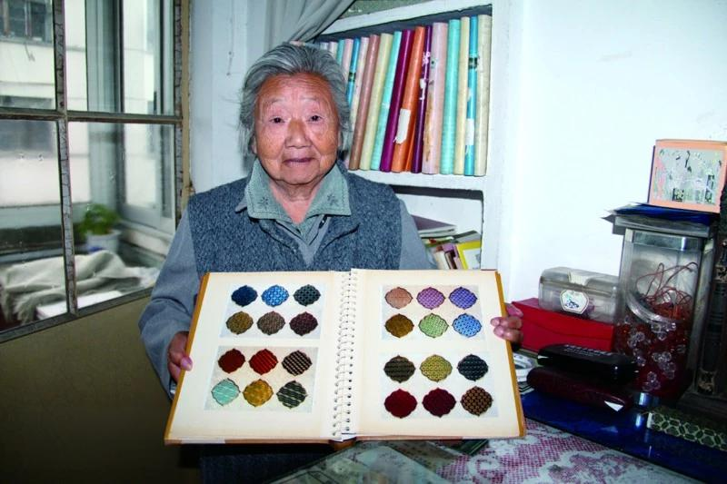
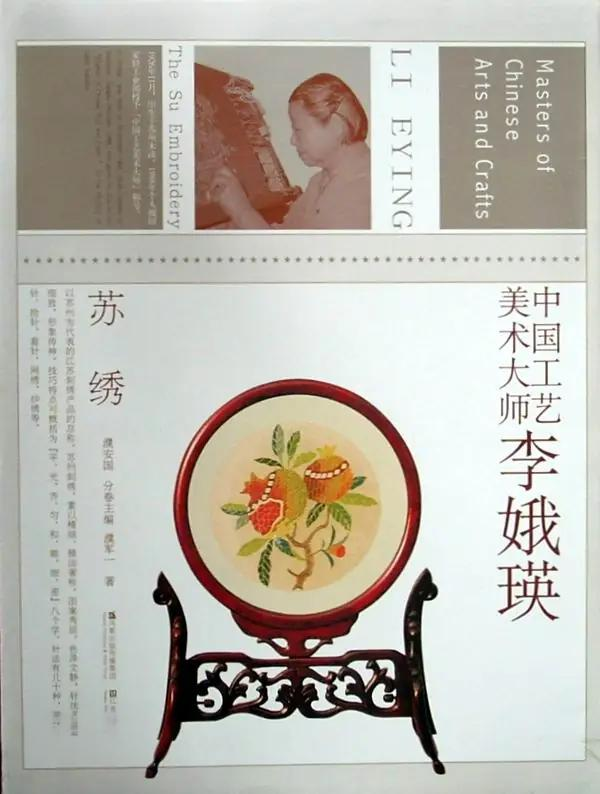
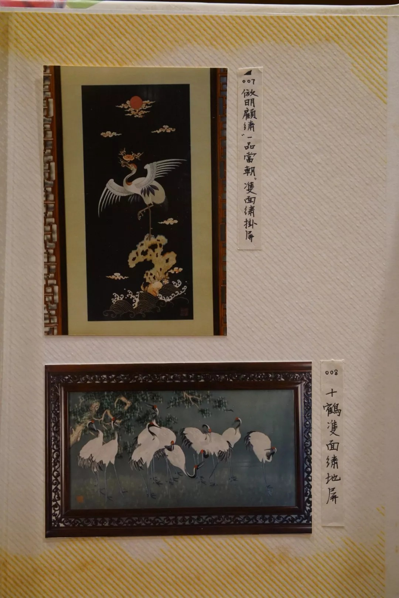
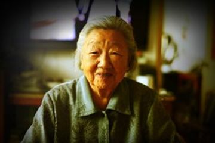

李娥瑛--首批国家级苏绣传承人

生平与师承
李娥瑛（1926—2018），江苏苏州木渎人，第一批国家级非物质文化遗产（苏绣）代表性传承人、中国工艺美术大师，一生与苏绣相伴，用针线守护千年技艺。
7 岁时，她便跟随母亲学习刺绣基本功，1954 年加入苏州市文联刺绣小组，正式拜苏绣大师金静芬为师，系统钻研传统苏绣技法，早年就以精湛的双面绣技艺崭露头角。
1954 年，李娥瑛加入苏州市文联刺绣小组，正式拜入苏绣一代宗师金静芬门下，系统学习传统苏绣的平针、套针、施针等核心技法，在大师的悉心指导下，她不仅精进了技艺，更深刻领悟了苏绣 “平、光、齐、匀、顺、和、细、密” 的八大精髓。
1955 年，她与团队合作创作首幅双面绣《五彩牡丹》屏，凭借细腻的针法、鲜活的色彩惊艳业界，正式在苏绣领域崭露头角。1956 年，她首创双面绣套针法，大幅提升了双面绣的层次感与立体感，代表作《双鲤鱼图》以灵动的姿态、逼真的质感，被故宫博物院永久收藏，成为苏绣经典传世之作。
她一生深耕苏绣创作与技艺研究，淡泊名利、潜心深耕，即便晚年身体抱恙，仍心系苏绣发展，2018 年 9 月在苏州逝世，享年 92 岁，用近一个世纪的坚守，践行了对苏绣艺术的毕生热爱。

李娥瑛
技艺与创新
李娥瑛是苏绣领域少有的 “实践 + 研究” 双栖大师，技艺全面且精湛，深耕苏绣数十年，深谙丝理与光的折射原理，擅长运用不同深浅、粗细、捻向的丝线 “调色”，绣制出古画的笔墨韵味、光影层次与立体质感，让绣品兼具工艺性与艺术性。1965 年，她大胆突破传统苏绣以丝绸为底料的行业惯例，首创用透明尼龙绡作为绣地，大幅提升了双面绣的通透感与灵动性，让绣品正反两面都能呈现出细腻的视觉效果，彻底革新了双面绣的创作边界，这一技法后来被广泛推广，成为当代双面绣的核心工艺之一。
她的大型作品同样气势不凡，经典之作《十鹤图》构图开阔、针法细腻，仙鹤姿态飘逸传神，虚实层次清晰，曾与《春江水暖》一同陈列于人民大会堂江苏厅，展现出苏绣大气端庄的艺术气度。

《十鹤图》 （苏州非遗网馆藏）
除了技法创新，李娥瑛更注重苏绣技艺的系统化、规范化传承。她耗时多年，主编《苏绣技法》《苏绣针法汇编》等行业专著，将流传千年、繁杂零散的苏绣针法，系统归纳为 9 大类 42 种，清晰规范了每一种针法的操作流程、适用场景与技巧要点，成为苏绣行业的标准教科书与教学范本，为苏绣的传承发展奠定了坚实的理论基础。
她还不断探索苏绣的材质与风格创新，尝试泥金底绣等特殊工艺，代表作《梅花幽禽》以泥金为底，搭配细腻的丝线绣制梅花与禽鸟，形成厚重雅致、金碧辉映的独特质感，既保留了传统苏绣的细腻，又增添了古朴华贵的艺术气息，成为苏绣技艺创新的典范之作。
她的创作始终兼顾传统底蕴与时代审美，无论是花鸟、山水还是人物题材，都能以精湛的针法赋予绣品生命力。
其作品还多次入选国家级工艺美术展览，斩获多项大奖，成为苏绣艺术的标杆性作品，被国内外多家博物馆、美术馆收藏。
传承与贡献
作为研究型苏绣大师，李娥瑛深知，苏绣的生命力不在于固守，而在于传承与创新并行，因此她毕生致力于苏绣的传承、推广与发展，从未停下传艺的脚步。她长期在苏州刺绣研究所的多届培训班授课，毫无保留地将自己的核心技艺、创作经验、审美理念倾囊相授，手把手培养出汤慧琴、陈英华等一大批优秀苏绣传人，这些传人大多成为当代苏绣领域的中坚力量，其学生的作品多次斩获国家级、省级工艺美术奖项，让苏绣文脉得以代代延续。
晚年的李娥瑛依然心系苏绣发展，不顾年事已高，将自己珍藏的 109 件个人档案、创作手稿、设计图纸、获奖证书等珍贵资料，无偿捐赠给苏州市档案馆，为苏绣的历史研究、技艺传承留存了完整的第一手史料，成为研究当代苏绣发展的重要文献。
她还积极参与苏绣的国际交流与推广，多次受邀赴海外举办个人展览、技艺讲座，向世界展示了苏绣的独特魅力与深厚文化底蕴，提升了苏绣在国际上的知名度与影响力。
李娥瑛用一生的坚守与创新，践行了对苏绣艺术的热爱与责任，她不仅是技艺精湛的苏绣大师，更是苏绣文化的守护者与传播者，她的贡献让苏绣这门古老的艺术焕发出新的生命力，成为中国传统工艺美术的重要瑰宝。
